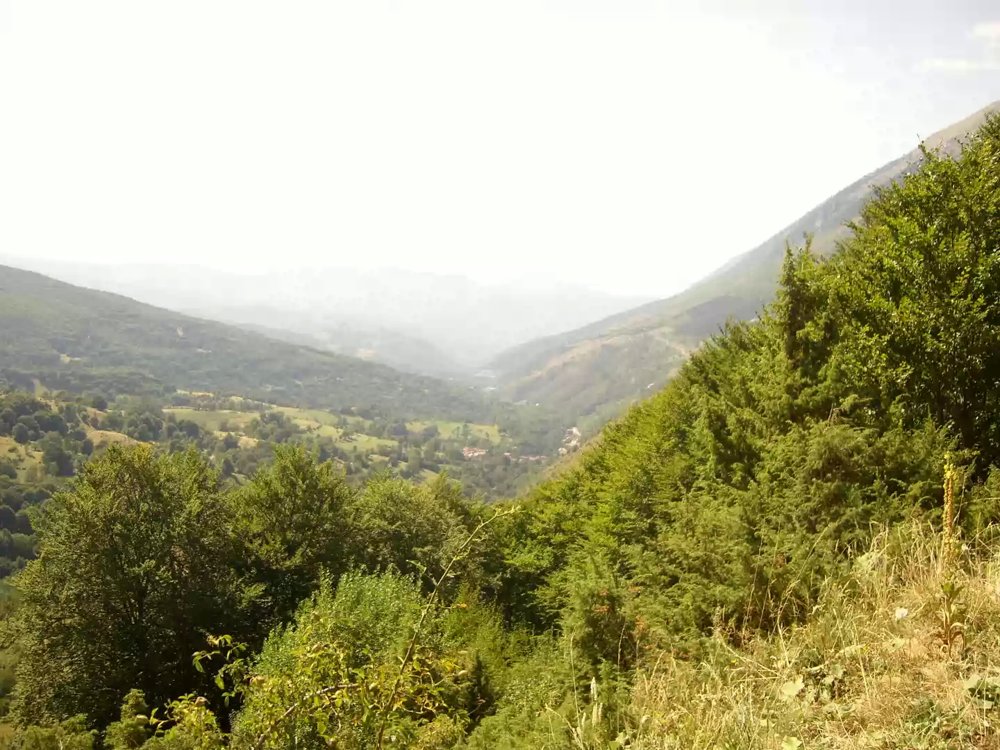

SRBIJA
Šar-planina predstavlja visok južni obod Srbije, prostirući se u dužini od 85 km, na granici sa Makedonijom. Svoje ime je zaslužila, kako se uglavnom
smatra, zbog šarenila planinskog pejzaža, kontrasta i živosti boja kojima ju je priroda oslikala. Kako bi se zaštitile njene izuzetne vrednosti,
ustanovljen je Nacionalni park „Šar planina“ 1993. u privremenim granicama od 39.000 ha, dok je predviđeno da trajnim granicama obuhvati površinu od
oko 97.000 ha.
Glavni greben ove planine je sa preko 30 vrhova visokih od 2500 m, sa najvišim vrhom u srpskom delu planine Bistra, 2652 m. Moćna snaga leda iz
pradavnog ledenog doba, u svojim različitim pojavnim oblicima, izbrazdala je duboke tragove u reljefu Šar-planine, i ispisala istoriju geoprocesa koji
omogućavaju proučavanje zemljine kore i rekonstrukciju geološke prošlosti Balkanskog poluostrva i šire. Po raznovrsnosti oblika, sa oko 100 cirkova,
Šar-planina predstavlja pravi muzej glacijalnog reljefa pod otvorenim nebom.
Šar-planinu odlikuje veliko bogatstvo i raznovrsnost živog sveta, i prisustvo velikog broja reliktnih i endemičnih vrsta. Sa 45% biljnog sveta Srbije,
osobenim šumskim zajednicama i vrstama, životinjskim vrstama koje se danas retko nalaze u prirodi, a mnoge su ugrožene u čitavom svetu, Nacionalni
park „Šar-planina“ sa punim pravom nosi obeležje skloništa za divlji svet koji danas ubrzano nestaje. Na Šar-planini živi 1800 biljnih vrsta.
Najznačajniji su brojni tercijarni i glacijalni relikti, i 339 balkanskih endemita, od kojih su 18 lokalni endemiti, prisutni isključivo na ovom masivu
(hajdučica kralja Aleksandra, born-milera, šarplaninski karanfilić, šarplaninski šafran, šarska divizma, šarska ptičja trava, Dorflerov petoprst…).
U Nacionalnom parku živi 147 vrsta dnevnih leptira, 45 vrsta vodozemaca i gmizavaca, oko 200 vrsta ptica i 32 vrste sisara, što ga čini jednim od
faunistički najbogatijih područja Evrope.

Pored toga što je ovaj nacionalni park po svom prirodnom bogatstvu jedna od vrućih tačaka biološke raznovrsnosti Evrope, on je izuzetno dragocen i
kao kolevka srpske duhovnosti, državnosti i istorije. Na ovom području se nalazi 45 crkava i manastira podignutih u periodu od XII do XVI veka. Tu su
isposnica i manastir Sv. Petra Koriškog iz XIII veka, crkva Sv. Petke iz XIV veka , crkva Sv. Bogorodice Odigitrije iz XIV veka, manastir Sv. Trojice
iz XV veka, ostaci Dušanovog grada i manastirskog kompleksa Sv. Arhangeli iz XIV veka nadomak Prizrena, i drugi spomenici kulture od najvećeg
nacionalnog značaja.
Šar-planina se nalazi u AP Kosovo i Metohija, koja je trenutno pod upravom UNMIK-a.